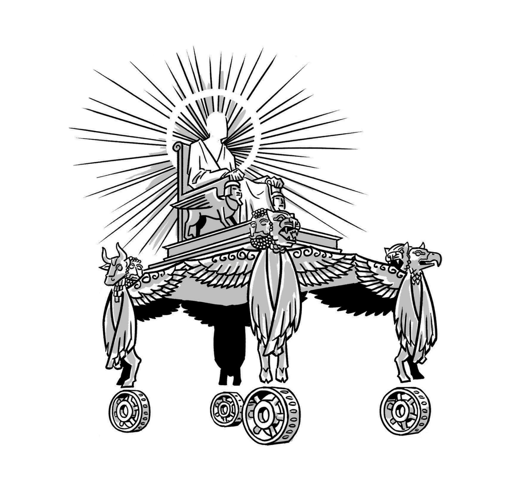

Ezequiel 1:1-11:25. Tradução e Projeto Literário por Tim Mackie para BibleProject Classroom: Ezequiel (2021).Ezekiel 1:1-11:25. Translation and Literary Design by Tim Mackie for BibleProject Classroom: Ezekiel (2021).
Ezequiel 1:1-3:15 é a narrativa do chamado de Ezequiel para se tornar profeta entre os exilados na Babilônia. A composição começa e termina com descrições do seu encontro com a presença móvel de Yahweh, e no meio há uma composição rigorosamente organizada que retrata a vocação de Ezequiel como profeta.Ezekiel 1:1-3:15: Ezekiel’s Vision and Commission. The opening literary unit of Ezekiel’s scroll is an account of his calling to become a prophet to the exiles in Babylon. The composition begins and ends with descriptions of his encounter with the mobile presence of Yahweh, and in the middle is a tightly organized composition that portrays Ezekiel’s commission as a prophet.
1 E aconteceu no trigésimo ano, no quarto mês, no quinto dia do mês, que eu estava no meio dos exilados, junto ao rio Quebar: os céus se abriram, e vi as aparências de Elohim. 2 "No quinto dia do mês" — este é o quinto ano do exílio do rei Joaquim. 3 A palavra de Yahweh veio a Ezequiel, filho de Buzi, o sacerdote, na terra dos caldeus, junto ao rio Quebar; e ali estava sobre ele a mão de Yahweh.1st Person — 1 And it came about in the thirtieth year, in the fourth month, on the fifth of the month, that I was in the midst of the exiles, by the river Chebar: the skies were opened and I saw the appearances of Elohim. 3rd Person — 2 "On the fifth of the month" — This is the fifth year of the exile of King Yoyakhin. a 3 The word of Yahweh was b to Ezekiel son of Buzi the priest c in the land of Chaldea, by the river Chebar, a' and the hand of Yahweh was b' upon him c' there.
A — 1:4-14 — A nuvem de tempestade, os seres viventes e a sua aparência: "E vi uma nuvem de tempestade vindo do norte … e havia brilho ao seu redor" (v. 4); "a aparência de metal brilhante no meio do fogo" (v. 4); "a aparência [dos seres viventes] era como brasas de fogo" (v. 13).A — 1:4-14 — The storm cloud and the living beings and their appearance: “And I saw a storm cloud coming from the north … and brightness around it” (v. 4); “the appearance of glowing metal in the middle of the fire” (v. 4); “the [living beings’] appearance was like coals of fire” (v. 13).
O desenho da visão é um quiasmo: 1:4-14 — a nuvem de tempestade e os seres viventes e a sua aparência (A); 1:15-21 — as rodas junto dos seres viventes (B); 1:22-28a — a plataforma do trono acima dos seres viventes e a figura semelhante a um humano sobre ela (B', com "e vi brilho ao seu redor… como um arco-íris numa nuvem" v. 28, e "vi a aparência de metal brilhante como a aparência do fogo" v. 27); e A' — "[a aparência do semelhante a um humano] era como fogo" (v. 28), "E vi e caí sobre o meu rosto" (v. 28).The vision’s design is a chiasm: 1:4-14 — the storm cloud and the living beings and their appearance (A); 1:15-21 — the wheels beside the living beings (B); 1:22-28a — the throne platform above the living beings and the human-like figure upon it (B', with “and I saw brightness around him … like a rainbow in a cloud” v. 28, and “and I saw the appearance of glowing metal like the appearance of fire” v. 27); and A' — “[the human-like one’s] appearance was like fire” (v. 28), “And I saw and I fell on my face” (v. 28).
4 E vi, e eis que um vento de tempestade vinha do norte, uma grande nuvem, e um fogo que relampejava para frente e para trás, e um brilho ao seu redor, e do seu meio era como a aparência de um objeto brilhante, do meio do fogo. 5 E do seu meio era a semelhança de quatro seres viventes, e esta era a sua aparência: 6 cada um tinha semelhança humana, e quatro faces para cada um, e quatro asas para cada um deles. 7 E as suas pernas eram retas, e a planta dos seus pés era como a planta do pé de um bezerro, e brilhavam como a aparência de bronze polido. 8 E as mãos de um humano estavam debaixo das suas asas nos seus quatro lados. 9 As asas tocavam-se umas às outras; não se viravam ao andar, cada um se movia na direção da sua face. 10 Quanto à semelhança das suas faces: a face de um humano, e a face de um leão estava à direita de cada um dos quatro, e a face de um boi estava à esquerda de cada um dos quatro, e a face de uma águia estava em cada um dos quatro. 11 E a sua face e as suas asas estavam estendidas por cima: cada um tinha duas tocando-se uma à outra, e duas cobriam os seus corpos. 12 E cada um se movia na direção da sua face, para onde o espírito se movesse, moviam-se; não se viravam ao mover-se. 13 Quanto à semelhança dos seres viventes, a sua aparência era como brasas de fogo ardente, como a aparência de tochas. Relampejava para frente e para trás entre os seres viventes, e havia um brilho ao fogo, e do fogo saíam relâmpagos. 14 E quanto às criaturas, havia um correr e voltar como a aparência do relâmpago.4 And I saw, and look: a storm wind was coming from the north, a great cloud, and fire was flashing back and forth and brightness was around it, and from its middle was like the appearance of a glowing-object, from the middle of the fire. 5 And from its middle was the likeness of four living-beings, and this was their appearance: Human — a Each had a human likeness; Face/wing — b 6 and four faces for each one and four wings for each one of them; Legs — c 7 and their legs were straight, and the bottom of their feet was like the bottom of a calf’s foot, and they were glowing like the appearance of polished bronze. Human — a' 8 And the hands of a human were under their wings on their four sides; Face/wing — b 9 the wings were touching one another; Movement — c' they did not turn as they went, each one moved in the direction of its face. Face/human — 10 And as for the likeness of their faces: the face of a human, a and the face of a lion was on the right of each of the four of them, and the face of an ox was on the left of each of the four of them, and the face of an eagle was on each of the four of them. Wings — b 11 And their face and their wings were spread out above: each one had two touching each other and two were covering their bodies; Movement — c' 12 and each one moved in the direction of its face, to wherever the spirit/breath would move, they moved; they did not turn as they moved. 13 And as for the likeness of the living-beings, their appearance was like coals of burning fire, like the appearance of torches. It was flashing back and forth between the living-beings; and there was brightness to the fire and from the fire there came out lightning. 14 And as for the creatures, there was a rushing and turning back like the appearance of lightning.
15 E vi os seres viventes, e eis uma roda sobre a terra junto dos seres viventes, para as suas quatro faces. 16 A aparência das rodas e a sua obra era como a aparência de pedra de Társis; e as quatro tinham uma mesma semelhança; e a sua aparência e a sua obra eram como se uma roda estivesse no meio de outra roda. 17 Quando se moviam, dirigiam-se aos seus quatro lados; não se viravam ao mover-se. 18 E tinham aros e altura, e vi que os seus aros estavam cheios de olhos/facetas ao redor dos quatro. 19 Quando os seres viventes se moviam, as rodas se moviam junto a eles; e quando os seres viventes se elevavam da terra, as rodas se elevavam. 20 Para onde o espírito se movia, moviam-se; e as rodas se elevavam junto a eles, porque o espírito do ser vivente estava nas rodas. 21 Quando eles se moviam, moviam-se; quando paravam, paravam; e quando se elevavam da terra, as rodas se elevavam junto a eles, porque o espírito do ser vivente estava nas rodas.15 And I saw, the living-beings and look: one wheel on the ground beside the living-beings, for their four faces. 16 The appearance of the wheels and their workmanship was like the appearance of Tarshish stone; and the four of them had one likeness; and their appearance and their workmanship was as if the wheel was in the middle of a wheel. 17 When they moved, they moved to four of their sides; they did not turn when they moved. 18 And they had rims and height, and I saw them and their rims were full of eyes/facets around the four of them. 19 And when the living-beings moved, the wheels moved beside them; and when the living-beings rose from the ground, the wheels rose up. 20 Wherever the spirit/breath moved, they moved to where the spirit/breath moved, and the wheels rose beside them, because the spirit/breath of the living-being was in the wheels. 21 When they moved, they would move; and when they stopped, they stopped; and when they rose from the ground, the wheels rose from the ground beside them, because the spirit/breath of the living-being was in the wheels.
22 E sobre as cabeças dos seres viventes havia a semelhança de uma plataforma, como a aparência de cristal que inspira temor, estendida sobre as suas cabeças acima. 23 E debaixo da plataforma as suas asas estavam estendidas, cada uma para a outra; para cada um, duas cobriam-nos, e para cada um, duas cobriam os seus corpos. 24 E ouvi o som das suas asas, como o som de muitas águas, como o som do Todo-Poderoso quando se moviam, o som de comotão, como o som de um acampamento; quando paravam, as suas asas baixavam. 25 E veio um som de cima da plataforma que estava sobre as suas cabeças; quando paravam, as suas asas baixavam. 26 E sobre a plataforma que estava sobre as suas cabeças, como a aparência de pedra de safira, estava a semelhança de um trono; e sobre a semelhança do trono, a semelhança como a aparência de um humano sobre ele acima. 27 E vi algo como um objeto brilhante; como a aparência de fogo era a sua estrutura ao redor, desde a aparência dos seus lombos e para cima; e desde a aparência dos seus lombos e para baixo, vi como a aparência de fogo, e claridade ao seu redor. 28 Como a aparência do arco-íris que está na nuvem no dia de chuva, tal era a aparência da luz ao redor. Esta era a aparência da semelhança da glória de Yahweh; e vi [e caí sobre o meu rosto].22 And over the heads of the living-being was the likeness of a platform, like the appearance of fear-inspiring crystal, spread out over their heads above. 23 And under the platform their wings were straight, each to the other; for each one, two were covering them, and for each one, two were covering their bodies. 24 And I heard the sound of their wings, like the sound of many waters, like the sound of the Almighty when they moved, the sound of commotion, like the sound of an army camp; when they stood still, their wings dropped. 25 And there came a sound, from above the platform that was over their heads; when they stood still, their wings dropped. 26 And over the platform that was over their heads, like the appearance of a sapphire stone, was the likeness of a throne. And over the likeness of the throne, was the likeness like the appearance of a human on it above. 27 And I saw something like a glowing-object, like the appearance of fire was its frame all around, from the appearance of his loins and upwards. And from the appearance of his loins and below, I saw like the appearance of fire, and bright light all around it. 28 Like the appearance of the rainbow which is in a cloud on a rainy day, such was the appearance of the light all around. This was the appearance of the likeness of the glory of Yahweh, and I saw [framing link back to 1:1] and I fell upon my face.
O "trigésimo ano" é muito provavelmente uma referência ao aniversário de Ezequiel e ao ano em que ele teria sido instalado como sacerdote em Jerusalém (ver Núm. 4:3, 35). A nota editorial no versículo 2 coordena o aniversário de Ezequiel com a marca dos cinco anos desde o aprisionamento e exílio do rei Joaquim de Jerusalém em 597. Esta visão acontece em 592, enquanto Ezequiel se assenta junto a um "rio" (נהר) ou canal de irrigação perto do seu acampamento de trabalho, na colônia de exilados (chamada Tel-Abibe, ver Ezeq. 3:15). Que lugar horrível para estar no seu aniversário!The "30th year" is most likely a reference to Ezekiel’s birthday and the year that he would have been installed as a priest in Jerusalem (see Num. 4:3, 35). The editorial note in verse 2 coordinates Ezekiel’s birthday with the five-year mark since King Jehoiachin’s imprisonment and exile from Jerusalem in 597. This vision happens in 592 while Ezekiel sits by a "river" (נהר) or irrigation canal near his labor camp settlement with the exiles (named Tel-Abib, see Ezek. 3:15). What a horrible place to be on your birthday!
… os céus se abriram, e vi as visões de Elohim.… the skies were opened, and I saw visions of Elohim.
"Os céus se abriram…" — Ezequiel não é transportado para os céus (como será em Ezeq. 40:1-3), mas recebe uma visão apocalíptica da sala do trono divino, como as visões experimentadas por Moisés e os anciãos (Êxodo 24:9-11), Micaías ben Inla (1 Reis 22:19-22) e Isaías (Isa. 6:1-10). "Visões de Elohim" (מראות אלהים) poderia ser interpretado como "uma visão de Elohim", isto é, uma visão da presença divina. Contudo, esta frase é usada mais duas vezes em Ezequiel: uma para descrever o seu tour virtual do templo de Jerusalém (Ezeq. 8:1-3), onde ele vê a presença divina, mas principalmente lhe é mostrada a idolatria no templo; e a segunda com a visão final do templo (Ezeq. 40:1-3), onde ele vê a glória divina (Ezeq. 43:1-11), mas também lhe são mostradas muitas outras coisas. "Visões de Elohim" é mais provavelmente uma "frase constructo atributiva", o que significa que a segunda palavra descreve um atributo da primeira. Ezequiel recebe "visão divina" para ver a realidade de uma perspectiva divina."The skies were opened …" Ezekiel is not transported into the skies (as he will be in Ezek. 40:1-3), but he is granted an apocalyptic vision of the divine throne room like the visions experienced by Moses and the elders (Exod. 24:9-11), Micaiah ben Imlah (1 Kgs. 22:19-22), and Isaiah (Isa. 6:1-10). "Visions of Elohim" (מראות אלהים) could be interpreted as "a vision of Elohim," that is, a vision of the divine presence. However, this phrase is used two more times in Ezekiel. Once to describe his virtual tour of the Jerusalem temple (Ezek. 8:1-3), where he does see the divine presence, but primarily he is shown the idolatry happening in the temple. The second use of the phrase occurs with Ezekiel’s final temple vision (Ezek. 40:1-3), where he sees the divine glory (Ezek. 43:1-11), but is also shown many other things. "Visions of Elohim" is more likely an "attributive construct phrase," which means the second word describes an attribute of the first word. Ezekiel is allowed "divine vision" to see reality from a divine perspective.
A visão começa com uma tempestade (Ezeq. 1:4) e termina com Yahweh no seu trono (Ezeq. 1:26-28). Estes dois pontos da visão coordenam dois temas-chave da presença de Yahweh a partir de tradições anteriores de Israel. 1. O aparecimento de Yahweh no Sinai em nuvem e tempestade (Êxodo 19-20; Salmo 18:7-14, Salmo 29). 2. A presença de Yahweh no tabernáculo/templo, entronizado sobre uma plataforma acima dos querubins em luz e glória (Êxodo 25:17-22, 40:34-48; Levítico 9:23-24; Isa. 6; Salmo 99:1). A visão avança em três passos.The vision begins with a storm (Ezek. 1:4) and ends with Yahweh on his throne (Ezek. 1:26-28). These two points of the vision coordinate two key themes of Yahweh’s presence from earlier Israelite traditions. 1. Yahweh’s appearance at Sinai in cloud and storm (Exod. 19-20; Ps. 18:7-14, Ps. 29). 2. Yahweh’s presence in the tabernacle/temple enthroned on a platform above the cherubim in light and glory (Exod. 25:17-22, 40:34-48; Lev. 9:23-24; Isa. 6; Ps. 99:1). The vision advances in three steps.
Passo 1 (1:4-14): A Tempestade, as Quatro Criaturas e a sua Aparência. Ezequiel primeiro vê uma nuvem de tempestade cheia de fogo, da qual emergem as quatro criaturas. O aparecimento de Yahweh numa nuvem de "tempestade" (סערה) é um motivo fundamental na Bíblia Hebraica, com raízes nas narrativas do Éden e do Sinai. No Éden (Gênesis 3:8-10), depois que os humanos agem tolamente, a "voz/som" (קול) de Yahweh aparece "passando" pelo jardim com o "vento do dia" (רוח היום). No Monte Sinai, Yahweh aparece numa tempestade violenta, completa com sons, relâmpagos e terremoto (Êxodo 19:16-19, 20:18-20). Estas aparições estabelecem o padrão para o resto da Bíblia Hebraica, onde o aparecimento de Yahweh na tempestade se torna um motivo simbolizando o dia de ajuste de contas, seja positivo ou negativo. Veja o uso desta palavra hebraica סערה com associações similares em 2 Reis 2:1, 11; Jó 38:1, 40:6; Isaías 29:6; Jeremias 23:19; Zacarias 9:14.Step 1 (1:4-14): The Storm, the Four Creatures, and Their Appearance. Ezekiel first sees a storm cloud full of fire, from which emerge the four creatures. The appearance of Yahweh in "a storm" (סערה) cloud is a foundational motif in the Hebrew Bible, with its roots in the Eden and Sinai narratives. In Eden (Gen. 3:8-10), after the humans act foolishly, the "voice/sound" (קול) of Yahweh appears "walking about" the garden with the "wind of the day" (רוח היום). At Mount Sinai, Yahweh appears in a violent storm complete with sounds, lightning, and earthquake (Exod. 19:16-19, 20:18-20). These appearances set the pattern for the rest of the Hebrew Bible, where Yahweh’s appearance in the storm becomes a motif symbolizing the day of reckoning, either positive or negative. See the use of this Hebrew word סערה with similar associations in 2 Kings 2:1, 11; Job 38:1, 40:6; Isaiah 29:6; Jeremiah 23:19; Zechariah 9:14.
Criaturas guardiãs (chamadas "querubins" em Ezeq. 10:20) assistem à presença de Yahweh (ver Gênesis 3:24; Isa. 6), e agora são reaproveitadas como portadoras do trono-céu. Cada criatura era comum na arquitetura de templos do antigo Próximo Oriente. Estas criaturas híbridas são símbolo de (1) todas as criaturas da terra fundidas numa só "criatura vivente", e (2) são criaturas que rompem categorias. Elas transcendem as categorias organizacionais da Bíblia de criaturas do ar, da terra e do mar. São chamadas por vários títulos na Bíblia Hebraica ("o exército celestial" em 1 Reis 22:19-22; "serafins" em Isa. 6:1-4; "querubins" em Gênesis 3:24; Ezeq. 10; etc.) e funcionam como guardiãs da fronteira entre o Céu e a Terra, especificamente em lugares carregados de simbolismo edênico (montanhas, árvores sagradas, rios). Na visão de Ezequiel, funcionam como portadoras do trono, semelhante ao seu papel na frase "Yahweh que se assenta entronizado sobre os querubins" (1 Samuel 4:4; Isa. 37:16; Salmo 80:1, Salmo 99:1). O facto de haver quatro criaturas com faces apontadas para as quatro direções da bússola é simbólico de todo o cosmos. O mesmo símbolo das quatro direções da bússola é usado em frases como "os quatro ventos" (Ezeq. 37:9, 42:20; Zacarias 2:6, 6:5; Daniel 8:8; 11:4). As várias criaturas convidam à reflexão sobre os seus traços e significado simbólico únicos: humano (imago dei, sabedoria), leão (força), boi (fertilidade, agricultura), águia (rápida, móvel).Guardian creatures (called "cherubim" in Ezek. 10:20) attend Yahweh’s presence (see Gen. 3:24; Isa. 6), and now they are repurposed as throne-chariot bearers. Each creature was common in ancient Near Eastern temple architecture. These hybrid creatures are a symbol of (1) all creatures of the land merged together into one "living creature," and (2) they are category-breaking creatures. They transcend the Bible’s organizational categories of creatures into air, land, and sea creatures. They are called by various titles in the Hebrew Bible ("the heavenly host" in 1 Kgs. 22:19-22; "seraphim" in Isa. 6:1-4; "keruvim" in Gen. 3:24; Ezek. 10; etc.) and function as guardians of the boundary between Heaven and Earth, specifically in locations that are heavy with Eden-symbolism (mountains, sacred trees, rivers). In Ezekiel’s vision, they function as throne-bearers, similar to their role described in the phrase "Yahweh who sits enthroned over the keruvim" (1 Sam. 4:4; Isa. 37:16; Ps. 80:1, Ps. 99:1). The fact that there are four creatures with faces pointed in the four directions of the compass is symbolic of the entire cosmos. The same symbol of four directions of the compass is used again in phrases like "the four winds" (Ezek. 37:9, 42:20; Zech. 2:6, 6:5; Dan. 8:8; 11:4). The various creatures invite reflection on their unique traits and symbolic meaning: human (imago dei, wisdom), lion (strength), ox (fertility, agriculture), eagle (swift, mobile).
Passo 2 (1:15-21): As Rodas Ligadas às Criaturas. O motivo do aparecimento de Yahweh na tempestade, onde ele cavalga um carro de querubins, é conhecido em outra parte da Bíblia Hebraica. Salmo 18:9-12 — "Inclinou também os céus e desceu; e havia densas trevas debaixo dos seus pés. Cavalgou sobre um querubim e voou; e foi levado sobre as asas do vento. Fez das trevas o seu lugar secreto, o seu pavilhão ao redor dele, trevas de águas, densas nuvens dos céus. Do brilho diante dele passaram as suas densas nuvens, pedras de saraiva e brasas de fogo." Quando Davi descreve a arca da aliança, primeiramente descrita em Êxodo 25, ele a chama explicitamente de "carro" (1 Crônicas 28:18).Step 2 (1:15-21): The Wheels Attached to the Creatures. The motif of Yahweh’s appearance in the storm, where he rides a chariot of keruvim, is known elsewhere in the Hebrew Bible. Psalm 18:9-12 — "He bowed the heavens also, and came down with thick darkness under his feet. He rode (רכב) upon a cherub and flew; and he sped upon the wings of the wind. He made darkness his hiding place, his canopy around him, darkness of waters, thick clouds of the skies. From the brightness before him passed his thick clouds, hailstones and coals of fire." When David describes the ark of the covenant, first described in Exodus 25, he explicitly calls it a "chariot" (1 Chron. 28:18, מרכבה).
17 Farás um propiciatório de ouro puro, de dois côvados e meio de comprimento e um côvado e meio de largura. 18 Farás dois querubins de ouro, de obra batida, nas duas extremidades do propiciatório. 19 Faze um querubim numa extremidade e outro na outra; os querubins serão de uma só peça com o propiciatório nas suas duas extremidades. 20 Os querubins terão as suas asas estendidas para cima, cobrindo com as asas o propiciatório, e voltados um para o outro; os rostos dos querubins hão de estar voltados para o propiciatório. 21 Porás o propiciatório sobre a arca, e na arca porás o testemunho que te darei. 22 Ali te encontrarei, e de sobre o propiciatório, de entre os dois querubins que estão sobre a arca do testemunho, falarei contigo sobre tudo o que te der em mandamento para os filhos de Israel.17 You shall make an atonement-lid of pure gold, two and a half cubits long and one and a half cubits wide. 18 You shall make two cherubim of gold, make them of hammered work at the two ends of the atonement-lid. 19 Make one cherub at one end and one cherub at the other end; you shall make the cherubim of one piece with the atonement-lid at its two ends. 20 The cherubim shall have their wings spread upward, covering the atonement-lid with their wings and facing one another; the faces of the cherubim are to be turned toward the mercy seat. 21 You shall put the atonement-lid on top of the ark, and in the ark you shall put the testimony which I will give to you. 22 There I will meet with you; and from above the atonement-lid, from between the two cherubim which are upon the ark of the testimony, I will speak to you about all that I will give you in commandment for the sons of Israel.
11 Então Davi deu a seu filho Salomão o projeto do pórtico do templo, dos seus edifícios, dos seus depósitos, dos seus aposentos superiores, das suas câmaras internas e do aposento do propiciatório. 18 … também o seu projeto para o carro de ouro dos querubins, que estendiam as suas asas e cobriam a arca da aliança do SENHOR. 19 "Tudo isto ele me esclareceu por escrito, pela mão do SENHOR, toda a obra a ser feita conforme o projeto."11 Then David gave to his son Solomon the plan of the porch of the temple, its buildings, its storehouses, its upper rooms, its inner rooms and the room for the atonement-lid. 18 ... also his plan for the golden chariot of the cherubim that spread their wings and covered the ark of the covenant of the LORD. 19 “All this he made clear to me in writing from the hand of the LORD, all the work to be done according to the plan.”
As quatro rodas em quatro cantos constituem um carro; o vocabulário usado é semelhante ao das bases de bronze com rodas no templo de Salomão (ver 1 Reis 7:27-37).The four wheels on four corners constitute a chariot; the vocabulary used is similar to the bronze wheeled stands in Solomon’s temple (see 1 Kgs. 7:27-37).
Cada roda é descrita como uma "roda dentro de uma roda" (Ezeq. 1:16). Isto não é um avistamento de um OVNI antigo! As rodas são o padrão de design móvel de um carro. Esta expressão está descrevendo (1) uma roda externa com uma roda interna unindo os raios, ou (2) outra roda do mesmo tamanho perpendicular a 90 graus em relação à primeira, criando uma ilusão de ótica que simboliza a capacidade do carro-trono de se mover em qualquer direção sem virar (ver a estátua assíria do lamassu, que usa ilusões de ótica para simbolizar movimento).Each wheel is described as a “wheel within a wheel” (Ezek. 1:16). This is not an ancient UFO sighting! The wheels are standard chariot mobile design. This phrase is either describing (1) an outer wheel with an inner wheel joining the spokes or (2) another wheel of same size perpendicular at 90 degrees to the first, creating an optical illusion symbolizing the throne-chariot’s ability to move in any direction without turning (see Assyrian lamassu statue for optical illusions to symbolize movement).
Além disso, diz-se que "os seus aros estavam cheios de olhos" (Ezeq. 1:18). A palavra para "olho" (heb. ‘ayin / עין) pode referir-se a um globo ocular real, caso em que este é um símbolo de que as criaturas e as rodas são "que tudo vê" enquanto a presença divina viaja pelo cosmos (ver o sentido semelhante da imagem em Apoc. 4:6). A palavra também pode significar "faceta", o lado brilhante de uma joia lapidada ou de um objeto trabalhado (ver Zacarias 3:9), caso em que se trata de uma descrição das rodas como cintilantes, tal como uma joia facetada.Further, it says “their rims were full of eyes” (Ezek. 1:18). The word for “eye” (Heb. ‘ayin / עין) can refer to an actual eyeball, in which case this is a symbol for the creatures and wheels as “all-seeing” as the divine presence travels about the cosmos (see the image's similar meaning in Rev. 4:6). The word can also mean “facet,” a shining side of a carved jewel or crafted item (see Zech. 3:9), in which case this is a description of the wheels as sparkling like a faceted jewel.
… o espírito dos seres viventes estava nas rodas.... the spirit of the living creatures was in the wheels.
O ruakh é a sua energia animadora. As criaturas e até as rodas estão "vivas" com uma energia divina por causa da sua proximidade com a presença divina. Esta expressão repetida enfatiza o movimento harmonizado e unificado das rodas e das criaturas, ainda que não estejam ligadas por um eixo. Este é um símbolo rico de quão vitalizadora e animadora é a presença divina, a ponto de até objetos inanimados como rodas ganharem vida quando estão na proximidade do criador!The ruakh is their animating energy. The creatures and even the wheels are “alive” with a divine energy because of their proximity to the divine presence. This repeated phrase emphasizes the harmonized and unified movement of the wheels and the creatures, even though they are not joined by an axle. This is a rich symbol of how vitalizing and animating the divine presence is, that even inanimate objects like wheels spring to life when they are in the proximity of the creator!
A plataforma que Ezequiel vê é chamada de "cúpula do céu" (heb. raqia‘ / רקיע), a divisória sólida que separa as águas de cima das águas de baixo no segundo dia de Gênesis 1:6-8, e que também é chamada de "os céus".The platform that Ezekiel sees is called the “sky-dome” (Heb. raqia‘ / רקיע), the solid partition that separates the waters above from the waters below in day two of Genesis 1:6-8, which is otherwise called “the skies.”
A imagem de Yahweh sentado sobre a cúpula do céu, que consiste nas águas de cima, é uma imagem central da soberania de Yahweh sobre o cosmos bíblico.The image of Yahweh sitting on top of the sky-dome that consists of the waters above is a core image of Yahweh’s sovereignty over the biblical cosmos.
3 A voz do SENHOR está sobre as águas; o Elohim da glória troveja, Yahweh está sobre muitas águas. 10 Yahweh assenta-se entronizado sobre o dilúvio; Yahweh está entronizado como Rei para sempre.3 The voice of the LORD is over the waters; the Elohim of glory thunders, Yahweh is over many waters. 10 Yahweh sits enthroned over the flood; Yawheh is enthroned as King forever.
9 Então Moisés subiu [ao Monte Sinai] com Arão, Nadabe e Abiú, e setenta dos anciãos de Israel, 10 e viram o Deus de Israel; e debaixo dos seus pés havia como um pavimento de safira, tão claro como os próprios céus. 11 Contudo, ele não estendeu a sua mão contra os nobres dos filhos de Israel; e eles viram Deus, e comeram e beberam. *Palavras-chave adaptadas pelo professor.9 Then Moses went up [Mount Sinai] with Aaron, Nadab and Abihu, and seventy of the elders of Israel, 10 and they saw the God of Israel; and under his feet there appeared to be a pavement of sapphire, as clear as the skies themselves. 11 Yet he did not stretch out his hand against the nobles of the sons of Israel; and they saw God, and they ate and drank. *Key Words Adapted by Teacher.
Todas estas conexões dependem da concepção fundamental da realidade na Bíblia Hebraica: que o cosmos inteiro é um templo, e que os espaços sagrados de Israel são um microcosmos — uma condensação simbólica de todo o cosmos. O conjunto de correspondências é explorado pela primeira vez nas narrativas da criação e do Éden, em Gênesis.These connections all depend on the foundational conception of reality in the Hebrew Bible: that the entire cosmos is a temple, and that Israel’s holy spaces are a microcosmos—a symbolic condensation of the entire cosmos. The set of correspondences is first explored in the creation and Eden narratives of Genesis.
| Tabernáculo/TemploTabernacle/Temple | Geografia Cósmica em Gênesis 1:1-2:3Cosmic Geography in Genesis 1:1-2:3 | Geografia Cósmica em Gênesis 2:4-3:24Cosmic Geography in Genesis 2:4-3:24 |
|---|---|---|
| Santo dos santosHoly of holies | Os céusThe skies | Montanha cósmica / o meio do jardimCosmic mountain / The middle of the garden |
| Lugar santo Menorá/Palmeiras Querubins SacerdotesHoly place Menorah/Palm trees Cherubim Priests |
A terra Árvores frutíferas Animais HumanosThe land Fruit trees Animals Humans |
O jardim no Éden Árvores frutíferas Querubins HumanosThe garden in Eden Fruit trees Cherubim Humans |
| Átrio Mar de bronze (1 Reis 8:64)Courtyard Bronze sea (1 Kgs. 8:64) |
As águasThe waters | A terra fora do jardimThe land outside the garden |
Cosmologia de Gênesis 1 e 2. Criado por Tim Mackie para BibleProject Classroom: Ezekiel (2021).Cosmology of Genesis 1 and 2. Created by Tim Mackie for BibleProject Classroom: Ezekiel (2021).
E então, no Monte Sinai, esta concepção do cosmos em três níveis também é aplicada à montanha.And then on Mount Sinai, this three-tiered conception of the cosmos is also applied to the mountain.
O Sinai e o Templo Refletem o Cosmos de Três Níveis. Criado por Tim Mackie para BibleProject Classroom: Ezekiel (2021).Sinai and the Temple Reflect the Three-Tiered Cosmos. Created by Tim Mackie for BibleProject Classroom: Ezekiel (2021).
A descrição que Ezequiel faz do "Deus-móvel" usa símbolos bem conhecidos da iconografia dos templos do antigo Próximo Oriente. E embora a sua visão tenha adaptado esses símbolos de uma forma única, existe um forte quadro cultural compartilhado que forma a imaginação visual de Ezequiel para a presença divina.Ezekiel’s description of the "God-mobile" uses symbols that are well-known from ancient Near Eastern temple iconography. And while his vision has adapted these symbols in a unique way, there is a strong, shared cultural framework that forms Ezekiel’s visual imagination for the divine presence.
… esta era a aparência da semelhança da glória de Yahweh. …... this was the appearance of the likeness of the glory of Yahweh. ...
Note que esta imagem microcósmica do templo é semelhante ao que Isaías experimenta na sua visão profética de chamado, em Isaías 6. Note que, em vez de o kavod do templo vir a Ezequiel, Isaías é transportado numa visão ao lugar santo, olhando para cima, para o santo dos santos, onde ele aprende que "toda a terra é a plenitude do seu kavod" (Isa. 6:3).Notice that this temple-microcosmic imagery is similar to what Isaiah experiences in his prophetic call-vision of Isaiah 6. Notice that instead of the temple kavod coming to Ezekiel, Isaiah is transported in a vision to the holy place looking up into the holy of holies, where he learns that “all the land is the fullness of his kavod” (Isa. 6:3).

Ezequiel descreve uma visão de quatro seres viventes e quatro rodas sustentando uma plataforma com um trono acima. O que esta imagem composta representa na imaginação bíblica?Ezekiel describes a vision of four living creatures and four wheels upholding a platform with a throne above. What does this composite image represent in the biblical imagination?